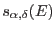
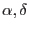
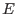
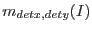
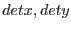
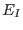
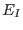
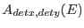
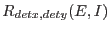

XMM-Newton Science Analysis System
evigweight (evigweight-1.7) [xmmsas_20170112_1337-16.0.0]
The spectroscopic model of the source gives
,
the number of photons received per cm and per second at the earth,
from sky position
 and at energy  (differential per solid angle and energy).
The number of photons,
, detected (per second)
in pixel  and in
PI energy bin  centered at  is obtained by multiplying
by the effective area and applying the response matrix:
centered at  is obtained by multiplying
by the effective area and applying the response matrix:
 is the effective area at position for energy
and includes all instrumental effects (telescope, RGA, filter,
detector).
 is the redistribution of photons of energy
at position into PI bin .
The correspondence between sky position and detector
coordinates depends on the telescope's pointing.
In theory this correspondence is not direct, but via a convolution
with the Point Spread Function. This complication is ignored here
(see Sect.3.7).
XMM-Newton SOC/SSC -- 2017-01-12